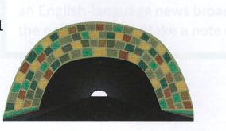
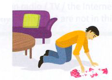
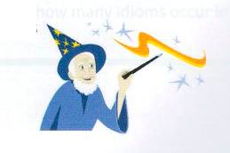

Bài tập
9.1 Nối mỗi thành ngữ bên trái với định nghĩa tương ứng của nó bên phải.
- tie up loose ends
- come to light
- give something a shot
- get to grips with something
- make do
- to be on the safe side
- wave a magic wand
- get to the bottom of something
- hiểu và giải quyết một vấn đề
- thử làm việc gì đó
- tìm một giải pháp dễ dàng
- để phòng hờ / cho an toàn
- hoàn tất những việc lặt vặt cuối cùng
- tìm ra sự thật
- xoay xở với thứ gì đó kém chất lượng hơn
- bị phát hiện / đưa ra ánh sáng
9.2 Hoàn thành mỗi thành ngữ sau đây bằng một từ.
- Tôi dạo này rất bận rộn với công việc, nhưng hiện tại tôi đã có thể see the light at the end of the ........................ (nhìn thấy ánh sáng cuối đường hầm) rồi.
- Sarah muốn ........................ a magic wand (vẫy cây gậy thần) và làm cho con trai mình vui vẻ trở lại.
- Chỉ cần đợi một chút trong khi tôi tie up these ........................ ends (giải quyết nốt những công việc lặt vặt còn tồn đọng), rồi tôi sẽ đi xem trận đấu với bạn.
- Khi bố mẹ cho cô ấy một ít tiền, điều đó giống như answer to her ........................ (lời đáp lại những nguyện ước/cầu nguyện của cô ấy).
- Tôi chưa bao giờ tập yoga trước đây, nhưng tôi rất sẵn lòng give ........................ a shot (thử làm việc gì đó).
- Công việc vẫn chưa in the ........................ (chắc chắn đạt được / nằm chắc trong tay) cho đến khi bạn nhận được lời mời làm việc bằng văn bản.
- Nghiên cứu này có thể shed fresh ........................ on (soi sáng thêm / làm sáng tỏ thêm) các nguyên nhân gây ra bệnh hen suyễn ở trẻ em.
- Khi tôi lắng nghe các bằng chứng, mọi thứ bắt đầu ........................ into place (trở nên rõ ràng / đâu vào đấy).
9.3 Hoàn thành mỗi câu sau bằng một thành ngữ trong khung. Thực hiện bất kỳ thay đổi cần thiết nào khác.
bring to light
come to light
fall into place
get to grips with
get to the bottom of
give it a whirl
pick up the pieces
shed light on
- Tôi muốn thử chơi ở sân chơi bowling mới đó. Chúng ta hãy ........................ (thử một lần cho biết) tối nay nhé.
- Tôi thấy khá khó khăn để ........................ (thấu hiểu và thích nghi với) vai trò mới của mình trong công việc.
- Khi việc kinh doanh thất bại, Paul đã biến mất, để lại người cộng sự của mình ........................ (tự mình xoay xở với mớ hỗn độn / giải quyết hậu quả).
- Một số bằng chứng mới quan trọng ........................ (đã được đưa ra ánh sáng) trong vài ngày qua.
- Tôi hy vọng chúng ta sẽ có thể ........................ (tìm hiểu ngọn ngành / làm sáng tỏ) những gì đang diễn ra.
- Nghiên cứu y học mới ........................ (làm sáng tỏ) các nguyên nhân gây ra các cơn đau tim.
- Ngay khi tôi gặp gia đình của Joshua, mọi thứ ........................ (trở nên rõ ràng / đâu vào đấy).
- Trong cuộc điều tra tài khoản của họ, một số sai sót ........................ (đã bị đưa ra ánh sáng).
9.4 Nối mỗi câu phát biểu bên trái với phản hồi có khả năng xảy ra nhất ở bên phải.
- Tôi sẽ rửa xe cho bạn!
- Chúng ta hãy về nhà bây giờ đi.
- Công việc đó đã in the bag (chắc chắn thành công / chắc chắn có được) rồi!
- Chúng ta nên mang theo ô (dù) thì hơn.
- Bạn có thể make do (dùng tạm / xoay xở) với một chiếc bút chì được không?
- Chúng tôi thực sự không biết phải làm gì!
- Được rồi, chỉ để to be on the safe side (cho chắc chắn / an toàn).
- Giá như tôi có thể wave a magic wand (vẫy cây gậy thần / có phép màu)!
- Bạn đúng là answer to my prayers (người đáp lại những lời cầu nguyện của tôi / cứu tinh của tôi)!
- Sớm thôi. Tôi vẫn còn một số loose ends to tie up (công việc lặt vặt cần giải quyết nốt).
- Tôi hy vọng bạn đúng!
- Chắc chắn rồi, như thế là ổn rồi.
9.5 Những bức tranh này gợi cho bạn liên tưởng đến những thành ngữ nào?
1

2

3
